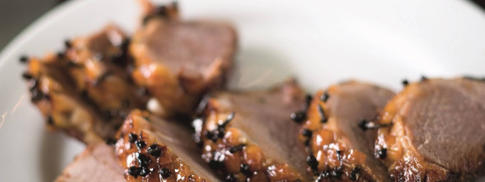

Honey Glazed Ham

Description
It's in the title, need I say more?
Ingredients
- 3kg unsmoked boneless gammon joint
- 4 medium carrots, peeled and roughly chopped
- 1 leek, cleaned and roughly chopped
- 1 onion, peeled and roughly chopped
- 1 tsp black peppercorns, lightly crushed
- 1 tsp coriander seeds, lightly crushed
- 1 cinnamon stick, broken in half
- 3 bay leaves handful of cloves
Ingredients for honey glaze
- 100g demerara sugar
- 50ml madeira
- 25ml sherry vinegar
- 125g honey
Steps
- Put the gammon into a large saucepan and pour on enough cold water to cover. Add the carrots, leek, onion, peppercorns, coriander seeds, cinnamon stick and bay leaves. Bring to the boil, turn down to a simmer and cook for 3 hours, topping up with more boiling water if necessary. Skim off the froth and any impurities that rise to the surface from time to time. If cooking in advance, leave the ham to cool in the stock overnight. Otherwise, allow it to cool a little, then remove from the pan. Strain the stock (and save for soups, sauces, etc.).
- To make the glaze, put the sugar, Madeira, sherry vinegar and honey into a pan and stir over a low heat. Bring to the boil, lower the heat and simmer for 3-4 minutes, until you have a glossy dark syrup. Do not leave unattended, as it can easily boil over.
- Preheat the oven to 190°C/Gas 5. Lift the ham onto a board. Snip and remove the string and then cut away the skin from the ham, leaving behind an even layer of fat. Lightly score the fat all over in a criss-cross, diamond pattern, taking care not to cut into the meat. Stud the centre of each diamond with a clove.
- Put the ham into a roasting tin and pour half of the glaze over the surface. Roast for 15 minutes.
- Pour on the rest of the glaze and return to the oven for another 25-35 minutes until the ham is golden brown, basting with the pan juices frequently. It also helps to turn the pan as you baste to ensure that the joint colours evenly.
- Remove from the oven and leave to rest for 15 minutes before carving and serving with the accompaniments.